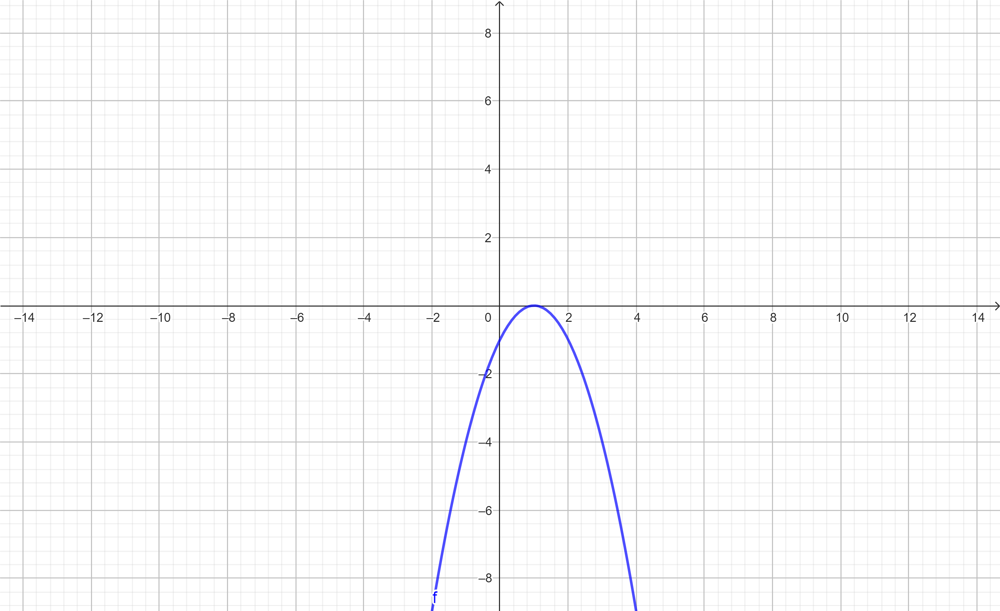

Para resolver as funções quadráticas eu consegui bem fácil, as regras ajudam bastante a entender lógica e resolver mais rápido os exercícios.
Nas funções quadráticas os pontos serão de máximo ou de mínimo dependendo de sua concavidade.
Agora que já conhecemos as regras e como são as funções veja um exemplo.
O a é < 0
Para encontrar suas raízes precismaos realizar a fórmula.
Quando tivermos raíz única o vértice estará no mesmo lugar da raíz.
Resumidamente encontramos:
Observe abaixo como essa reta ficou, com exemplo do geogebra.
Em resumo, os gráficos das funções quadráticas geram parábolas que podem abrir para cima ou para baixo, dependendo do sinal do A.
O ponto crucial da parábola indicará se é um valor mínimo ou máximo.